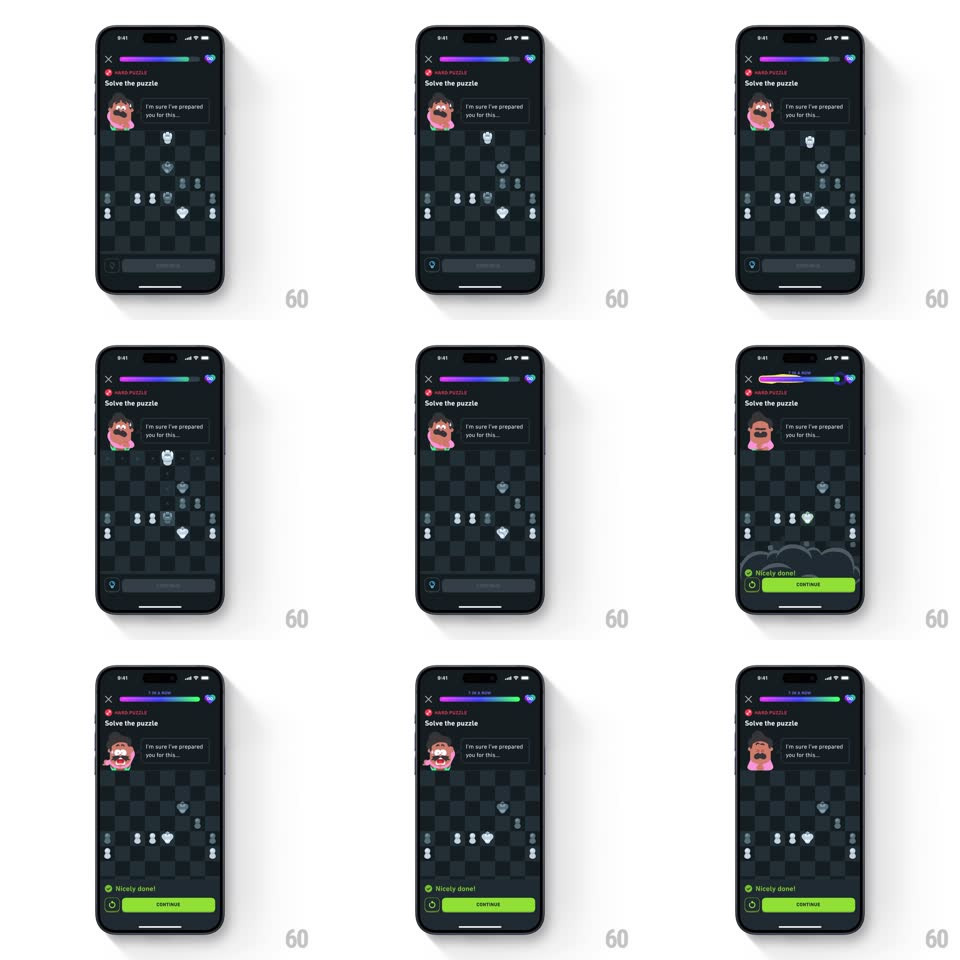

Media
Frame-by-frame

Rebuild this animation 1:1: Duolingo's chess puzzle capture moment - a correct capture pops the taken piece into a cloud burst, then a green "Nicely done!" banner springs up from the bottom as the mascot reacts.

Rebuild this animation 1:1: Duolingo's chess puzzle capture moment - a correct capture pops the taken piece into a cloud burst, then a green "Nicely done!" banner springs up from the bottom as the mascot reacts.
## Integration
Integration: stack-agnostic spec - springs given as stiffness/damping, timed motions as duration + curve; map every value to your framework and animation library of choice.
## Scene
A dark chess puzzle screen ("Solve the puzzle", a top progress bar, the Oscar-style mascot with a speech line "I'm sure I've prepared you for this..."): the board fills most of the screen; the success state adds a green bottom banner ("Nicely done!", CONTINUE button) and a reacting mascot.
## Motion spec
Pattern: capture burst + banner slide-up, ~900ms.
- Capture: the capturing piece slides to its target square (250ms, ease-out); the captured piece pops (scale 1 -> 1.3, 120ms) and bursts into a small white cloud puff (scale 0.4 -> 1.4 + fade, 350ms) that drifts up slightly as it dissipates.
- Ring: a highlight ring pulses once on the destination square (scale 0.8 -> 1.1 + fade, 300ms).
- Banner: the green banner slides up from the bottom edge (spring ~320/20, 400ms) with a slight overshoot, its check icon popping in (scale 0 -> 1, spring ~420/18, +100ms).
- Mascot: the mascot swaps to its reaction pose (150ms crossfade) as the banner lands.
## Calibration
- The burst is quick and light - a puff, not fireworks.
- Banner overshoot is small; it settles in one bounce.
## Reduced motion
Capture happens without the puff; banner fades up.
## Don't miss
- The burst originates from the captured piece's square, not the capturing piece.
- The progress bar advances with the success state.